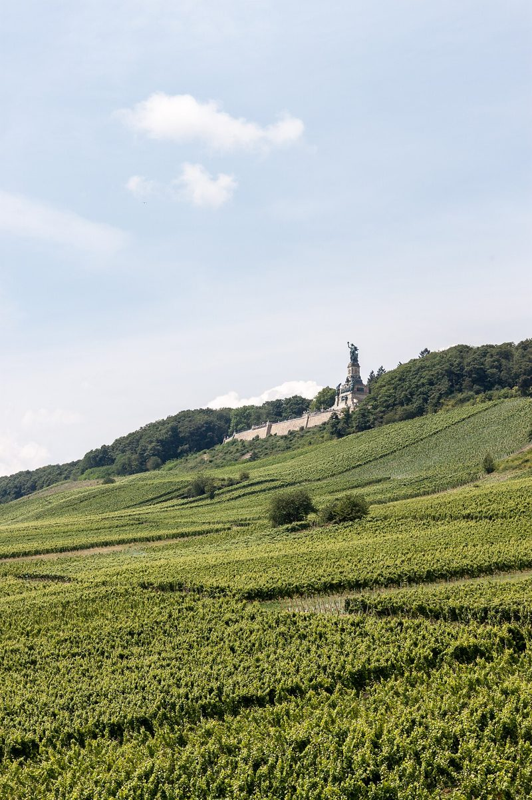

探索德国莱茵高葡萄园：美景与美酒的完美结合

德国的莱茵高地区以其壮丽的葡萄园和优质的葡萄酒闻名于世。这里不仅有令人心醉的自然风光，还有悠久的酿酒历史。无论你是葡萄酒爱好者，还是想要体验德国乡村的宁静与美丽，莱茵高葡萄园都是一个不容错过的目的地。
如何到达莱茵高葡萄园
莱茵高地区位于德国黑森州，距离法兰克福约一小时车程。从法兰克福出发，你可以选择乘坐火车或自驾前往。火车是最方便的公共交通方式，沿途还可以欣赏到莱茵河的美景。如果你选择自驾，沿途的风景同样会让你流连忘返。推荐在沿途的小镇停靠，感受当地的乡村风情。
最佳旅行时间
莱茵高葡萄园的最佳旅行时间是春末到初秋，尤其是五月至九月。这个季节，葡萄园绿意盎然，气候宜人，非常适合户外活动。如果你喜欢热闹，九月和十月是葡萄收获的季节，当地会举办许多葡萄酒节，你可以品尝到新鲜的葡萄酒，并参与到欢庆活动中。
不可错过的景点
1. 埃伯巴赫修道院（Kloster Eberbach）：这座修道院是莱茵高地区最著名的历史建筑之一，曾是欧洲最大的酿酒修道院。如今，这里不仅是葡萄酒爱好者朝圣的地方，还是电影《香水》的取景地。参观修道院时，建议加入导览团，了解更多关于酿酒的历史和文化。
2. 约翰尼斯堡城堡（Schloss Johannisberg）：这座城堡是德国最古老的葡萄酒庄园之一，拥有超过千年的酿酒历史。你可以在这里品尝到顶级的雷司令葡萄酒，并欣赏到莱茵河畔的壮丽景色。
3. 吕德斯海姆（Rüdesheim）：这个小镇以其狭窄的巷道和热闹的酒吧街而闻名。你可以乘坐缆车前往山顶的尼德瓦尔德纪念碑，俯瞰整个莱茵河谷的美景。晚上，不妨在小镇的酒馆里品尝一杯当地的葡萄酒，感受莱茵高的夜生活。
美食推荐
除了葡萄酒，莱茵高地区的美食同样不可错过。当地的餐馆主打传统德国菜，推荐尝试当地的猪排或香肠，搭配一杯雷司令葡萄酒，简直是绝配。此外，莱茵高地区的奶酪和面包也非常有特色，尤其是搭配葡萄酒一起享用，更能体验到当地的风味。
总的来说，莱茵高葡萄园是一个充满魅力的目的地，无论是自然风光、历史建筑，还是美食美酒，都能让你留下难忘的回忆。计划一次莱茵高之旅，亲自感受这份独特的美丽与宁静吧！
Haiktec
- 7 Magische Regenbogengeschichten für Kleine Träumer (3-8 Jahre)
- 智能搬家与装修预算跟踪器 - 2026专业版
- 智能园艺入门：7个简单步骤实现家庭自给自足
Text mit KI erstellt und automatisch geprueft.